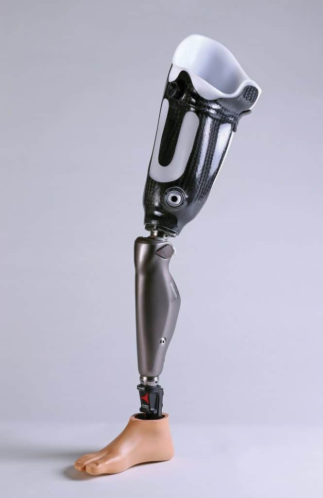
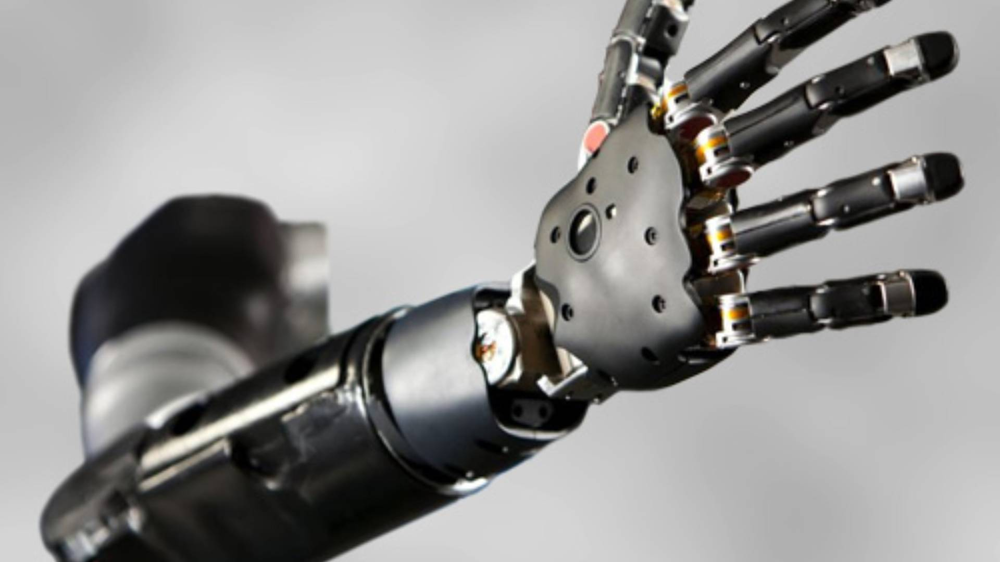

Prosthetic Leg
Prosthetic Hand

Prosthetics are artificial parts or devices of the body that replace body parts that are either missing or nonfunctional. Examples include arms, legs, fingers, joints, cranial, and even voice box prosthetics. They help anyone who has lost a limb like veterans.
The first prosthetics were used to help soldiers return to fighting state. Then, in 950-710 BC, the first known prosthetics were used. In 600 BC, Egyptians created the Greville Chester toe, which was made out of linen, glue, and plaster. However, the oldest prosthetics that were used as prototypes was the "Capua Leg," which was made by the Romans and crafted out of iron and bronze with a wooden core.
During the Middle Ages , there were peg legs and hooks being created for those who lost their legs and hands. The knights were fitted into the prosthetics, so they could return to the battle.
During the Civil War, there were advancements in the technology for prosthetics. For example, there were cosmetic rubber hands with fingers. In 1945, during the last moments of World War II, the prosthetics were made out of wood and leather, but they were heavy and hard to keep clean.
In the 1970s, plastics, polycarbonates, resin, and laminates were introduced as light, easy-to-clean alternatives as materials for prosthetics. They were custom synthetic pockets for each patient for easy fit. From 2000-2014, advanced to highly specialized prosthetics were made. They use robotics, brain-computer interfaces, and 3D printing. For example, small devices in the brain that connect to limb prosthetics help people who are paralyzed neck down.
The atomic arm is still in development. When development is finished, it will be the first prosthetic arm with individual finger control.
There would be thicker gel cushioning to help with pressure dissipation.
There could be technology that provides patients with a sense of touch. This is especially useful with prosthetic arms.
Thanks for viewing this website. It took a long time to insert all of the code and format it correctly. There were many issues that came up along the way, such as the video not playing or the size of the sections. Another issue that came up was the linking of the tabs in the navigation bar to the individual sections themselves. Another challenge was linking the arrow returning you to the beginning of the page to actually link to the beginnign of the page.
Quick Note: The search bar at the top only works if you search for key words. For example, if you search "hand" then it will take you to the area in the webpage where it finds the word hand. This is still a work in progress.
This page was created by using the Bootstrap. The Bootstrap created the basic template for this page. Then, I had to code in the style, formatting, and other elements to make this page look like a proper page. For example, I used a combination of CSS and HTML in order to create the sections the appopriate width and color. The changes in font were due to a mixture of inserting code and using the default font that is automatically inserted when one creates a website.
By completing this project, I learned that you can use Bootstrap to create websites quicker, saving a lot of time. I also learned the code needed for embedding videos and other forms of media. In addition to this, I learned how to create this section, link the navigation bar tabs to their respective sections, and create an arrow button to move back to the top of the page.
A variety of resources were used to create this webpage, such as...
When conducting my research topic, I learned that you have to pick out the main points for each subtopic you want to talk about and pick and choose the key details. This is because not all information may be able to fit on the website. Over time, I also learned that when initially researching a topic, you can have as much information as you want. However, once you start to create the webpage, you will need to pick and choose which information to insert and which information not to insert.